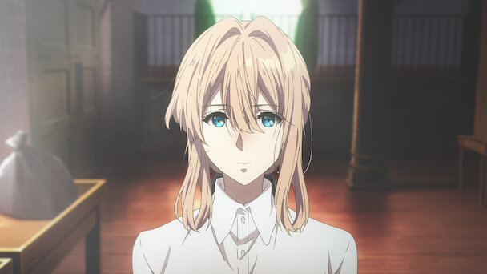
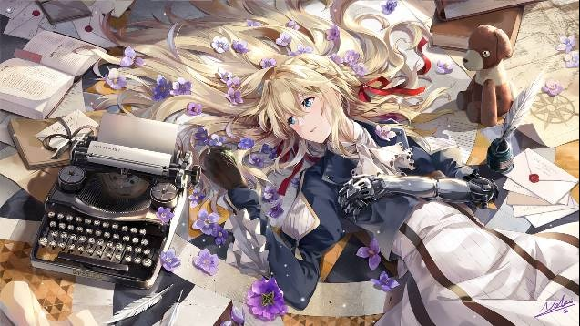
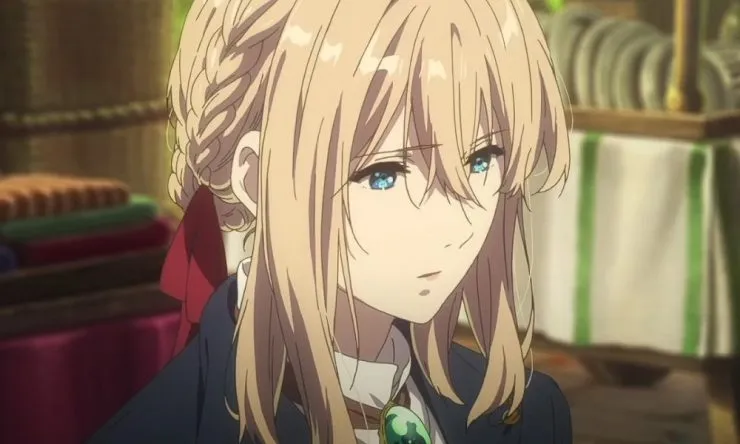
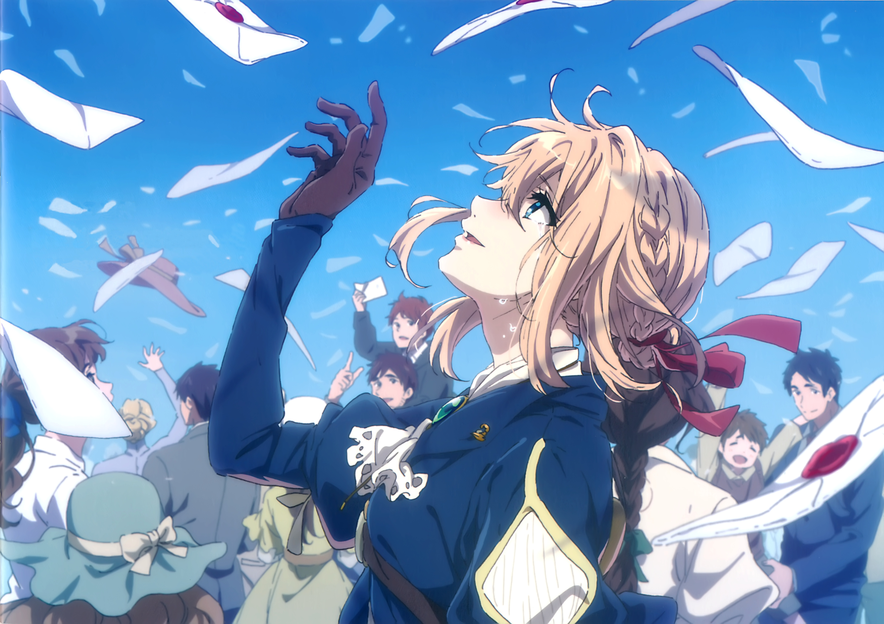
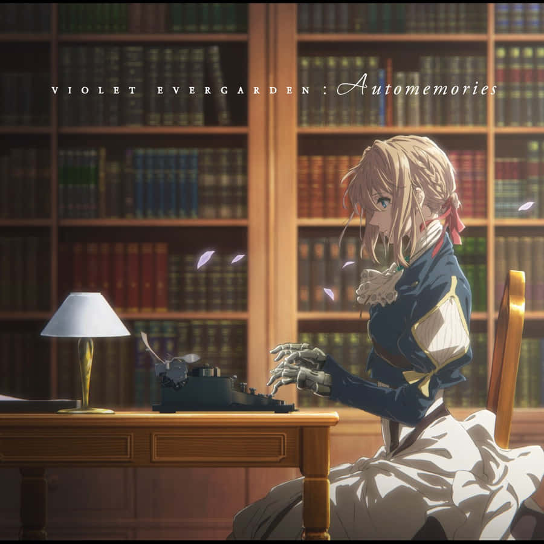
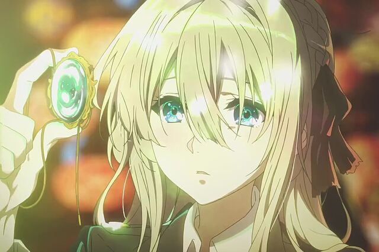

Violet Evergarden

Violet Evergarden es una joven huérfana que desde niña fue entrenada como soldado, convirtiéndose en un arma letal en el campo de batalla. Su origen es un misterio, pero su habilidad para luchar la convirtió en un elemento crucial durante la guerra. Criada sin vínculos emocionales ni comprensión del afecto, su vida estuvo definida por órdenes y obediencia. Esto cambió drásticamente cuando fue asignada al cuidado del comandante Gilbert Bougainvillea.
Para Violet, Gilbert fue el primer rayo de luz en su vida. Aunque inicialmente la trató como un arma, pronto comenzó a verla como una persona. Gilbert le enseñó a leer, escribir y, poco a poco, a experimentar emociones humanas. Su relación marcó profundamente a Violet, especialmente cuando él le confió sus últimos deseos antes de desaparecer en la batalla: "Vive... y sé libre". Estas palabras, junto con la frase “te amo”, que Violet no comprendía en ese momento, se convirtieron en el motor de su nueva vida.
Tras el fin de la guerra, Violet decidió convertirse en una Auto Memory Doll, escribiendo cartas para las personas que necesitaban expresar sus sentimientos. Este trabajo no solo le permitió explorar el significado del amor y el dolor, sino también descubrir su propia humanidad. A través de sus interacciones con clientes de todo tipo, Violet fue transformándose, entendiendo que las emociones no siempre se pueden expresar con palabras, pero las palabras tienen el poder de sanar.
El viaje de Violet es una búsqueda constante por comprender las emociones humanas y redimir su pasado. A medida que avanza, comienza a aceptar su papel no solo como una escritora, sino como alguien que conecta corazones a través de sus cartas. Violet no solo transforma las vidas de quienes la rodean, sino que también logra encontrar su propia identidad, dejando atrás el vacío emocional que marcó su niñez. Su historia es un testimonio de la fuerza del amor, la redención y el poder de las palabras.
Galleria




